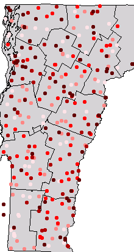
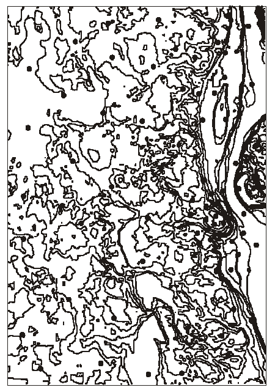
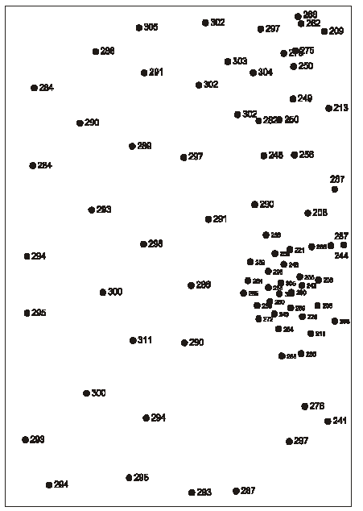
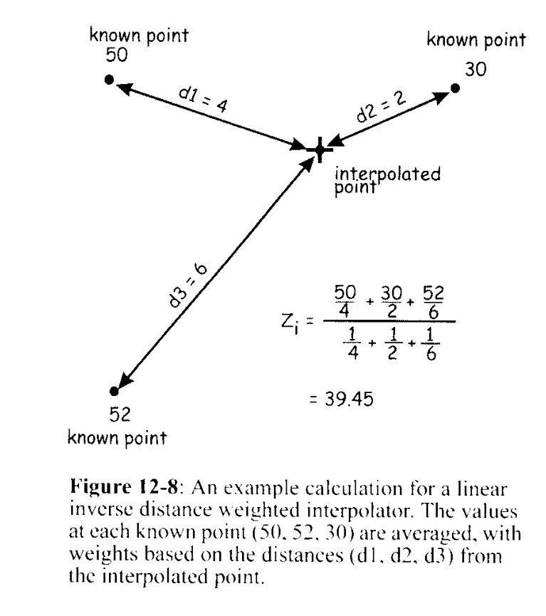
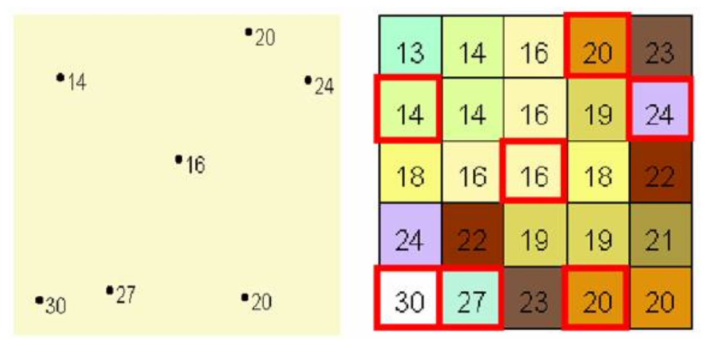

Interpolation + IDW
Interpolation
Interpolation estimates values at unknown locations based on known measurements.
Big idea: because of spatial dependence (near things are more related than far things), we can predict between measured points — but the method and parameters matter.
Example: sample points
Discrete measurements (points) can be interpolated to a continuous surface (raster).
Contour map idea
Contours are one way to visualize a continuous surface derived from measurements.
Benchmarks (known values)
IDW intuition
Inverse Distance Weighting (IDW) predicts a value as a weighted average, where closer points get more weight.
The power parameter controls how quickly influence falls off with distance.
IDW example figure
IDW surface example
Common pitfalls
- Garbage in, garbage out: interpolation won’t fix biased sampling.
- Parameter sensitivity: power, search radius, and number of neighbors change results.
- Over-interpretation: interpolated surfaces look “precise” even when uncertainty is high.